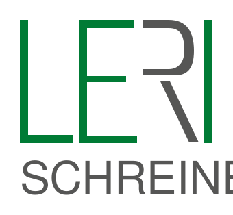

Öffentliche Einrichtungen
Kantonsschule Wiedikon · Universitätsspital Zürich
Schreinerarbeiten für öffentliche Bauten: Ausbauten, Einbauten und Reparaturen im Bestand.

Ihr Schreiner. Einer für Alles.
Schreinerei im Zürcher Kreis 4
0 %
LERI Schreinerei AG · Kanzleistrasse 221 · 8004 Zürich

Projekte
Innenausbauten, Möbel nach Mass, Restaurationen und Montagen aus unserer Werkstatt an der Kanzleistrasse 221. Gerne zeigen wir Ihnen weitere Referenzen und Muster bei einem Kaffee vor Ort.
Aus der Werkstatt
Eigene Aufnahmen unserer eigenen Arbeiten — Innenausbauten, Möbel nach Mass, Montagen, Maschinen und unser Team. Alles stammt aus unserer Werkstatt an der Kanzleistrasse 221; keine gekauften Bilder. Klicken Sie ein Bild an, um es gross zu sehen.
Es gibt mehr zu sehen, als hier Platz hat: Rufen Sie an unter 044 242 72 66 und kommen Sie in der Werkstatt vorbei — wir zeigen Ihnen gerne weitere Referenzen und Muster.
Referenzen
Keine erfundenen Stimmen und keine Sterne: hier stehen die Auftraggeber, die uns seit Jahren holen — und wofür.
Öffentliche Einrichtungen
Schreinerarbeiten für öffentliche Bauten: Ausbauten, Einbauten und Reparaturen im Bestand.
Genossenschaften und Verwaltungen
Ausbauten und Reparaturen in Liegenschaften, Arbeiten beim Mieterwechsel und für Immobilienverwaltungen — im Unterhalt und in der Instandsetzung.
Firmen und Ladenlokale
Tresen, Einbauten und Möbel für Läden, Büros und Gastronomiebetriebe — nach Mass gefertigt und montiert.
Dazu Architekten und Bauleiter sowie viele Privatpersonen, die seit Jahren mit uns arbeiten. Gerne zeigen wir Ihnen weitere Referenzen und Muster bei einem Kaffee in der Werkstatt.

Kontakt
Rufen Sie an, schreiben Sie eine Mail oder kommen Sie in der Werkstatt vorbei, mitten im Zürcher Kreis 4. Wir laden Sie gerne zu einem Kaffee ein.